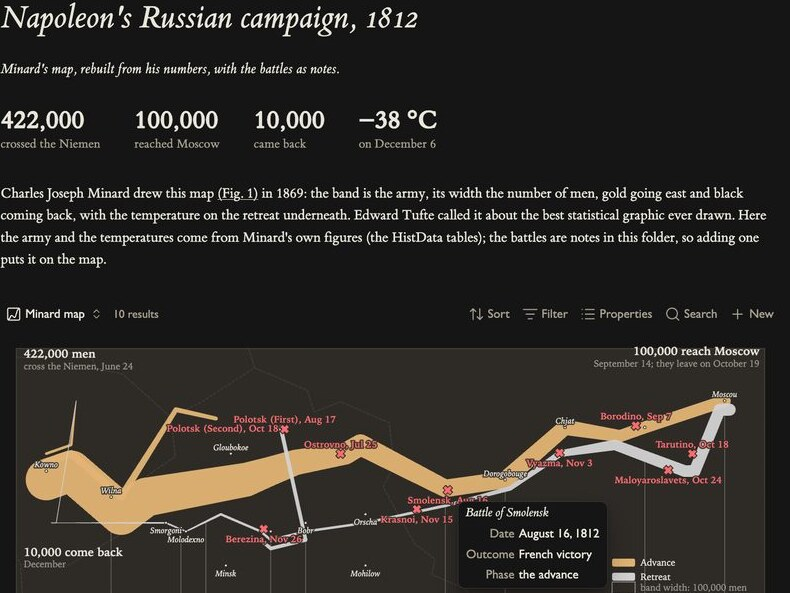
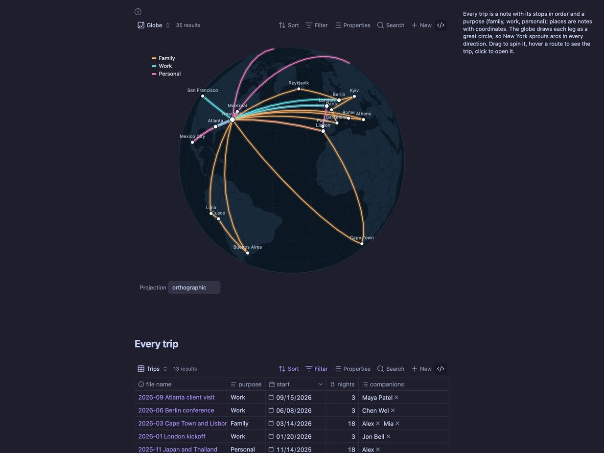
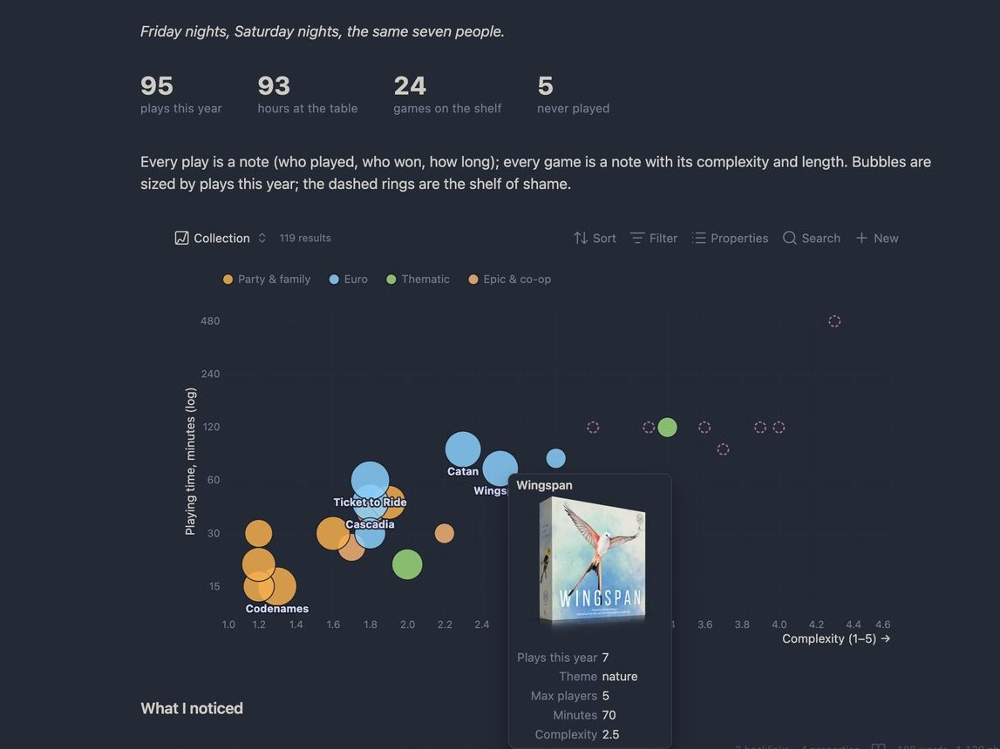
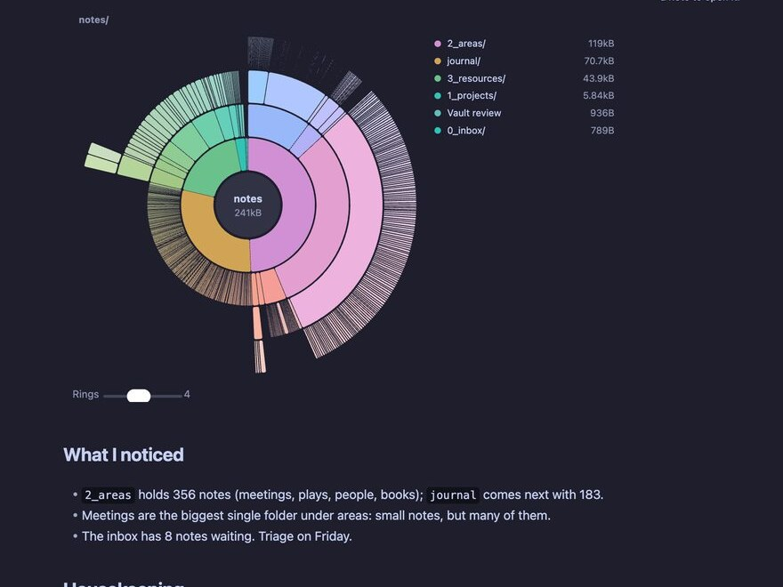
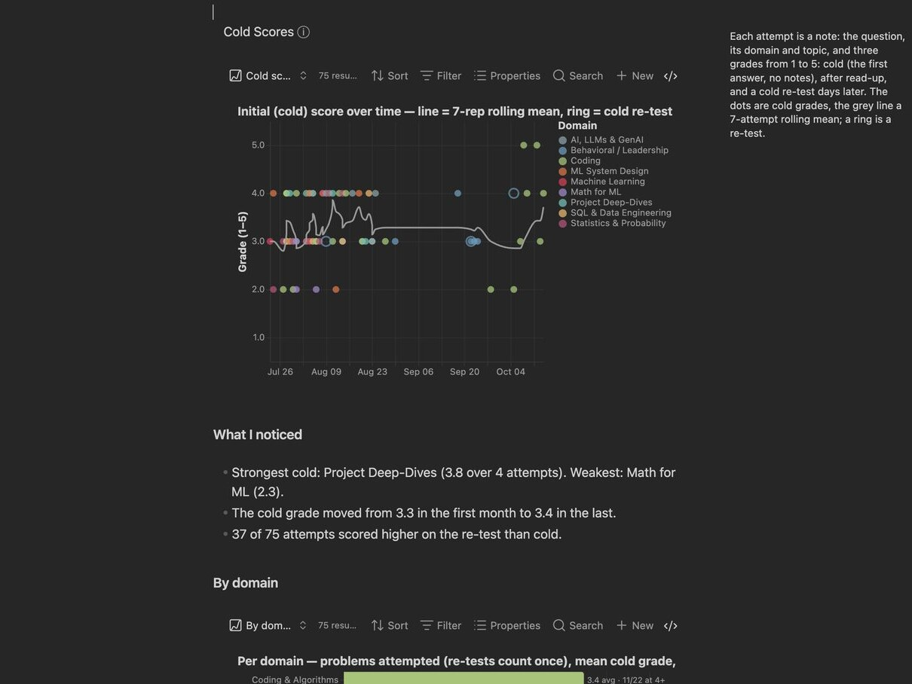
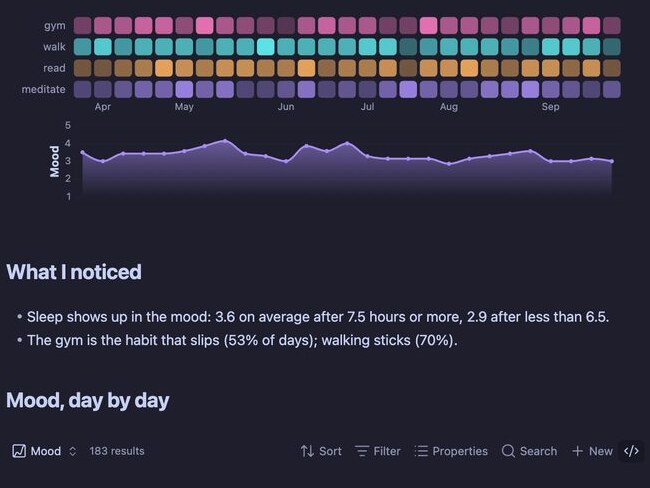
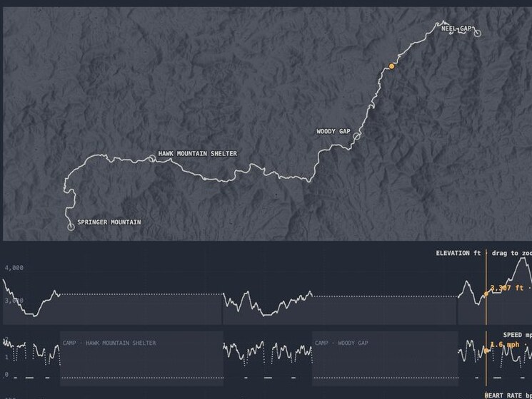

gallery
What you can draw.
Every example is a real note in the demo vault: a plain Vega or Vega-Lite spec over ordinary notes. Each shows the Agate feature it leans on, and links to its spec. Click a picture for the full screenshot.


maps · historyMinard's 1812, from battle notes
The army's path and width come from Minard's own figures; every battle is a note in a base, so adding one drops a mark on the map. Hover a mark for the note's date, outcome and phase; a temperature chart below shares the same scale.
feature: layered maps · tooltips from note properties · the Editorial theme


mapsTrips on a globe you can spin
Trip notes list their stops; place notes carry coordinates. Every leg is a great circle on an orthographic globe you drag to rotate. The Trips table below is the base that feeds it.
feature: map projections · links between notes · travel-globe.vg.json


collectionsPictures in tooltips
A board-game shelf by complexity and playing time, bubbles sized by plays. The tooltip shows the box art pulled from each note's image property, with its stats underneath.
feature: images in tooltips · covers-tooltip.vl.json


hierarchiesThe vault itself
A DaisyDisk-style sunburst of folders and files, arc length by bytes. Click a ring to zoom into a folder, the centre to go back up, a file to open it.
feature: the folder tree · partition layout · open-on-click · vault-sunburst.vg.json


stats & countsHeadline numbers that stay true
Big numbers, a rolling mean and per-domain counts, all computed from the base. Add a note and they update — the headline figures are rendered as real text, not pixels (see Experiments).
feature: stats-as-HTML · rolling means · stats-row-html.vl.json
 networks
networks
Who works on what, from your links
People and projects are notes; the [[links]] between them are edges. A force layout coloured by property, with a slider that hides weak ties. Unlike the core graph view, the base decides which notes are in, and properties drive size and colour.
feature: links as edges · force layout · link-graph.vg.json
your look
Three themes, one of them dynamic.
The obsidian theme reads your Obsidian fonts and colours and redraws the instant you switch light and dark. The others give a chart a fixed character.


Follows your theme


A monochrome readout
Serif, margin captions
experiments
Things a fixed chart menu can't do.
Because every chart is a full Vega spec and Agate hands it the vault's links, folder tree and per-note external data, some charts step outside the usual list. The full set is in why-agate.md.
Charts inside table rows
One row per note, its properties as columns, and a cubism-style horizon chart of that note's own time series in the last column. Hover runs a cursor across every row at once.
Set the basemap
Put a map on a real basemap and choose which one — a keyless hillshade in light and dark out of the box, or a private provider (MapTiler, Stadia, Mapbox) with your own key, read from the environment and kept out of the spec.
see the Instrument hike dashboard above
Numbers as text, not pixels
A spec marked output: "stats" runs headlessly: Vega aggregates, then Agate renders the result as real HTML in your note's fonts, so the big numbers wrap and select like text.
More in the repo: a sankey across properties, an arc diagram of links over time, a linked dashboard, and a beeswarm.
Make one over your own notes.
Pick a recipe or prompt an assistant — no chart library to learn.